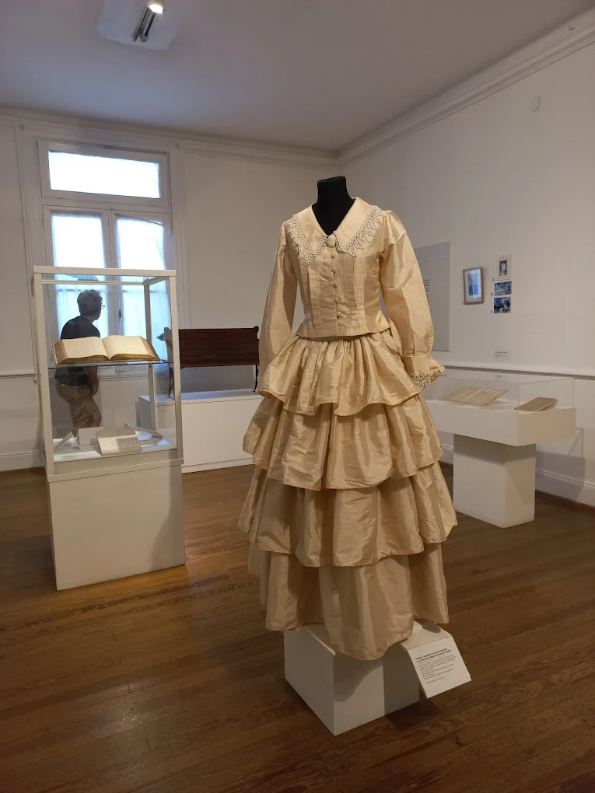

Museo Histórico Sarmiento
Historia y política en el antiguo edificio municipal
El Museo Histórico Sarmiento ocupa el edificio de la antigua Municipalidad de Belgrano, una joya de estilo neoclásico italiano inaugurada en 1873 y proyectada por el arquitecto Juan Antonio Buschiazzo. Entre estas paredes sesionó el Congreso Nacional en 1880 durante la federalización de Buenos Aires, y hoy sus salas preservan la memoria de Domingo Faustino Sarmiento: su labor como educador, escritor, gobernador y presidente de la Nación.
Qué ver en el museo
- Recorrer las salas con mobiliario original, manuscritos y objetos personales de Sarmiento.
- Visitar la biblioteca especializada y el centro de investigación histórica.
- Contemplar la arquitectura neoclásica del edificio y su fachada declarada Monumento Histórico Nacional.
Datos útiles
- Ubicación
- Juramento 2180 (esq. Cuba), Belgrano, CABA
- Días y horarios
- Miércoles a viernes de 13 a 19 h — Sábados, domingos y feriados de 14 a 19 h
- Entrada
- Gratuita

Postales del museo
Un recorrido visual por las salas, el patrimonio y la arquitectura del edificio histórico.
-

Hall de ingreso -

Sillón de Sarmiento -
Biblioteca histórica -

Detalles neoclásicos -

Patio interno -

Jardines de la fachada
Recomendaciones para tu visita
-
Sin flash ni trípodes
Está permitido tomar fotos, pero sin flash ni trípodes para preservar las piezas originales.
-
Duración estimada
Calculá entre 40 y 60 minutos para recorrer todas las salas con calma y leer las referencias.
-
Mochilas y bolsos
Al ingresar te pedirán dejar bolsos grandes y mochilas en el guardarropa de la recepción.
-
Visitas guiadas
Los fines de semana se ofrecen visitas guiadas gratuitas. Consultá horarios en la recepción del museo.
⚠️ Atención
El museo no cuenta con estacionamiento propio. Se recomienda llegar en transporte público: Subte D (estación Juramento) o colectivos 29, 41, 44, 59, 60, 63, 65, 80, 152.